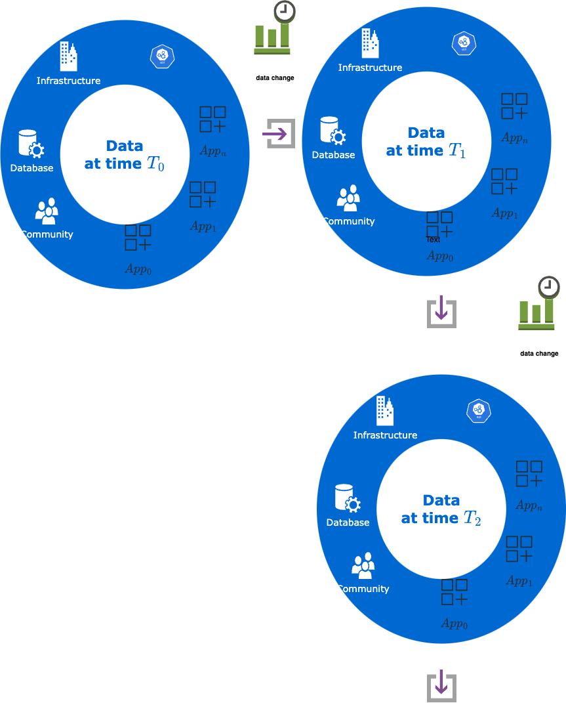
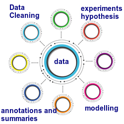
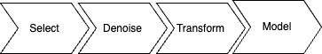
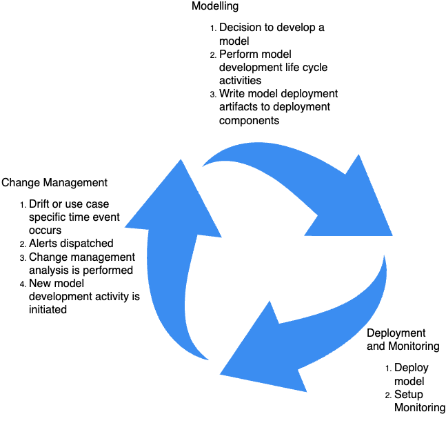

Here is the anatomy of a rinse and repeat data science project.
Analysis pivots around the data

Implementation pivots around your use case
Once we have decided on a set of candidate data assets for your use case, I would need to assess the data quality of the data sources and identify modeling approaches that make sense in light of the discussions we have had up to this point. I would plan a set of activities that should lead to some initial previews of the modeling approaches. These model development approaches are proof of concept sketches on a small sample of the data and are meant to convey and develop an understanding of what a modeling approach can deliver. I will discuss these results with you. If the initial previews are encouraging and we agree on refining this further, I would refine the data preprocessing activities and other supporting analyses. The degree of detail and precision that we capture in our discussion has a bearing on the modeling results. Of course, it is very much possible that you have an epiphany about your use case after we have these discussions and have moved on to the next step, modeling. If this happens and you want to incorporate this into your first iteration, we can come back to this step to reevaluate modeling requirements in light of your new insight.

Modeling
When we agree on refining and getting a detailed evaluation of the solutions relevant to your use case, I can begin the modeling phase. The details of this phase really depend on whether you have an analytic use case or a machine learning use case. An analytic use case typically performs a computation on all of the data. Computation on all of the data can require the use of a cluster. Sometimes, computation on all of the data is not possible and will require the use of approximation techniques . Typically, there is no learning component in an analytic use case. If you have a machine learning use case, the style of learning you want to adopt, offline or batch machine learning, is an important decision. When to redeploy a model and the kind of learning style that you want to adopt is a decision that is driven by business conditions, your budget, and lead times in your organization for model deployment. If this is your first deployment, an offline model is a reasonable model to begin with.
A Resonable Processing Template
A template for implementation based on the above steps is as follows. In what follows, the components of an implementation framework are discussed. A reference implementation for an analytics project and a machine learning project is provided. These projects are also recipes . A discussion of a recipe is provided in the next section. The first step of the reference implementation is the select step. This step selects the subset of data that you provide to me that is relevant to the task1. The second step is the denoising step. For each attribute that is relevant, there is a set of admissible values for that attribute. What is admissible depends on the use case and the attribute. Admissible values of the attribute are what can be processed in the modeling or analytics computation. The set of inadmissible values for the attribute is called noise. How noise is processed, called, denoising depends on the use-case and the type of inadmissibility. Missing values can be one type of inadmissibility. Denoising produces a dataset that is ready for further processing. Once the data is denoised, each attribute in the resulting dataset has values that the model building or the analytics computation can process. Data Quality tools can be used to abstract away the notion of noise and attest to the quality of the dataset for modeling and analytics computation2. In order to perform the required modeling or analytics computation, we may need new attributes derived from the attributes in the raw dataset, or we may need to transform the raw attributes to a new form based on some preprocessing recipe. This happens in the transform step. At the end of the transform step, we have a dataset that is ready for modeling. What is done in the modeling step depends on the specifics of the use case. See the provided recipes for a sense of what this step can entail.

Data Products
If you are working with me on a machine learning project, then it is possible that this use generates representations of your dataset that can be consumed by other applications in your organization. Capturing these representations or embeddings as a full-featured data product can be done. There is no recipe for this at the moment, but this should published as a recipe soon3.
Recipes and Algorithms
A recipe (for the purposes of this documentation) is a data science task that occurs routinely in organizations. The specification of a task is in terms of an organizational or a business context as opposed to a computational description. A robust, satisfactory implementation of this task can be applied with minor changes in a range of applications. A recipe must include the following:
- Task Description
- The task description describes, with suitable examples, the occurrences of the task in organizations and why organizations want to perform the task.
- Task Data Description
- The task data description describes the input data format to the task.
- Task Solution Description
- The task solution description describes the computational steps involved in developing a solution for the task.
An algorithm (for the purposes of this description) has an analogous definition to a recipe except that the specification of an algorithm is in terms of a computational context. It is meant to abstract the details of computation as opposed to a task that is either a part of a use case, or, a use case by itself. The details of the specification are analogous to a task specification.
Please read the recipes section of this documentation to see how the above idea is implemented for an analytic recipe and for a machine-learning algorithm. A modeling solution I discuss with you would be described in terms of recipes and algorithms. The discussion of your problem with you will help me understand what recipes and algorithms are a good fit for your use case.
Operationalizing the Solution
When we agree the solution is at a state that you want to operationalize into your business operating environment, I can support you as follows:
- If your use case is a simple report, a small set of APIs that are stand-alone, I can do that for you. For example, if we can use github codespaces, then that would make operationalizing the solution very simple. It becomes a matter of spinning up an appropriate dev container, installing the requirements.txt file on the container and we should have a working solution.
- If your use case needs to be integrated into an existing infrastructure, then I can work with your dev-ops and ml-ops team to get this integrated. The solution can be containerized and I can work with your dev-ops team to do what it takes to configure the containerized solution to what your dev-ops team needs. For example, if you have a platform solution with specific interface constraints, I can work with that.
- If the solution is a machine learning solution, I can work with your dev-ops team to set up monitoring for the solution.
Once the solution is operationalized, then one or more of the following temporal events happen:
- There is a standard operating procedure related to the developed task, for example, you may be doing performance reporting or evaluation every quarter and at the start of the new quarter, you need to run the use case on new data.
- In the case of machine learning applications, a data drift may occur. This implies that the data that the model was built or trained on is different from the data you are now receiving, so a new model based on the current data needs to be built.
In both these cases, you revisit the modeling phase make adjustments, and then reoperationalize the new solution. This is something you can do yourself if you or your team are comfortable doing it or I can do that for you. A schematic showing this process is shown below.
- Please see the development tools for details of development tools that I currently use.

Footnotes
-
Our discussion of the data requirements of the task is an estimated set of attributes, the exact set will be determined during implementation. ↩
-
pandera is an example of a data quality tool. See the repository for an example of data quality rules are developed and applied to a real world dataset. ↩
-
Of course, it is possible that your entire use case is the development of a data product. ↩